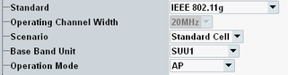

The global settings are at the top of the configuration dialog. Configure them according to your test scenario, before configuring any other settings.
Depending on the global settings, only a particular set of actions and parameters is available and the GUI changes accordingly.
Parameters can even have different meanings depending on the global settings. For an example, see "SSID".

Selects the IEEE 802.11 standard to be used. The available values depend on the selected operation mode.
For background information, see "Signal Properties".
Remote command:Selects the channel bandwidth. Bandwidths greater than 20 MHz require an SUA.
Options R&S CMW-KS656 and R&S CMW with TRX160 are required for the bandwidth ≧ 80 MHz.
Note that only contiguous 160 MHz channel bandwidth is supported, non-contiguous 80+80 MHz (uncorrelated) is not supported.
Remote command:Selects SISO or MIMO operation.
"Standard Cell" | SISO operation. Select the role of the R&S CMW and the DUT via the operation mode. |
"MIMO" | MIMO operation. The R&S CMW simulates an access point with TX MIMO capability. For further configuration, see "TX MIMO Settings". Option R&S CMW-KS670 is required. |
Selects the signaling unit to be used. This setting is especially useful for multi-CMW setups, to select the instrument.
Note that WLAN signaling does not run on a single SUA partition. You can select an SUU (for example "SUU1") or both partitions of an SUA (for example "SUA1&2").
Remote command:The operation mode is configurable for scenario "Standard Cell".
"AP" | The R&S CMW simulates an access point in infrastructure mode. The DUT is a WLAN station. |
"Station" | The R&S CMW simulates a WLAN station. The DUT is an access point. |
"IBSS" | The R&S CMW simulates a WLAN station in IBSS (ad hoc) mode. The DUT is also a WLAN station in IBSS mode. |
"Wi-Fi Direct" | The R&S CMW simulates a Wi-Fi Direct group owner. The DUT is a Wi-Fi Direct client. Option R&S CMW-KS660 is required. See also "Wi-Fi Direct". |
"Hotspot 2.0" | The R&S CMW simulates a Wi-Fi Hotspot 2.0 access point. The DUT is a WLAN station. Option R&S CMW-KS660 is required. See also "Hotspot 2.0". |